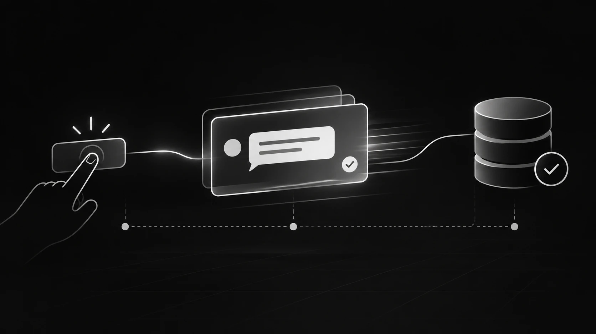

Respond First, Reconcile Later: Building Faster Real-Time Apps
What real-time chat, multiplayer games, and optimistic updates taught me about WebSockets, critical paths, and designing for perceived latency.


For nearly five months, I kept running into the same problem while building the first version of one of my mobile apps. The app allowed two people to chat and play games together, but something about the experience never felt right.
The features worked. Messages were delivered, game moves synchronized, and both users could interact with the same shared environment. Yet every interaction had a noticeable delay. One person would send a message or make a move, and the other person would have to wait before seeing it.
I turned to AI coding agents to help investigate the problem. I described the delay, received suggested changes, implemented them, and tested the results. Some optimizations made individual operations faster, but the overall experience remained sluggish. It felt like two devices were constantly waiting for each other to catch up.
When I started working on version two, I realized I had been asking the wrong question.
Instead of asking how to make each operation faster, I needed to understand what actually had to happen before the user could see a response.
What happens between the moment someone taps a button and the moment the other person sees the result?
That question changed how I approached the entire architecture.
Understanding the Original Real-Time Architecture
The application already used a real-time connection, which initially made the latency difficult to understand. If the devices were communicating through WebSockets, why did interactions still feel delayed?
The answer was in how the application handled incoming events.
When a user sent a message or made a game move, the application followed a sequence of operations:
- The sender submitted the action to the backend.
- The backend validated and persisted the change.
- The backend notified the other device that something had changed.
- The receiving device requested the latest state from the server.
- The server returned the updated data.
- The receiving device finally rendered the message or game move.
The architecture looked something like this:
- Sender submits the action
- Backend validates and saves
- Partner gets a change notification
- Partner fetches the updated state
- Partner renders the action
At first glance, this seems like a reasonable implementation. The backend remains the source of truth, changes are persisted before being broadcast, and receiving devices fetch the confirmed state.
The problem is that the notification doesn't actually contain the information needed to update the interface.
It simply tells the receiving device that something has changed.
That means the receiving device must perform another network request before it can display anything.
The application is effectively waiting for one operation to finish before starting another. Even if each individual request is relatively fast, the cumulative delay becomes noticeable.
This is what makes the critical path so important.
The critical path is the sequence of operations that must complete before a particular result can become visible. If an interaction requires a database write, a broadcast, another request, and a response before the interface can update, every one of those operations contributes to the perceived delay.
I had been optimizing individual operations without questioning whether all of them needed to happen before the interface could respond.
The Clue Was Already Inside the Application
Interestingly, the application already had an interaction that felt considerably faster.
Users could drag a character around a shared scene. When one person moved a character, the other device displayed the movement almost immediately.
Why did this interaction feel different from sending a message or making a game move?
The answer was the event payload.
When a character moved, the application broadcast the actual coordinates of that movement. The receiving device didn't need to ask the backend for the updated position. It already had the information necessary to render the change.
That distinction was important.
Instead of sending a notification that something had changed, the application sent enough information for the receiving device to respond immediately.
I realized I could apply the same principle to chat and multiplayer interactions.
A chat event could carry the message itself. A board-game event could carry the proposed move, the player's identity, and the board revision on which the move was made.
The receiving device could then display a provisional update without waiting for the database operation and subsequent fetch to finish.
The revised architecture looked like this:
- Assign an ID and queue the action
- Show it on the sender’s screen
- Broadcast the queued action
- Partner renders the preview
- Submit the queued action
- Backend validates and saves
- Deliver authoritative state
- Both screens reconcile
The technology stack remained relatively straightforward:
- SwiftUI: Native mobile application interface.
- SQLite: Local persistence and pending action queue.
- Supabase Realtime: Private WebSocket broadcasts.
- Postgres: Authoritative shared application state.
Supabase Realtime supports different broadcasting approaches, including client-initiated broadcasts and database-triggered broadcasts. That distinction became important because a client-initiated broadcast allowed the application to distribute a provisional update without waiting for the database transaction to complete.
This changed the interaction from a strictly sequential process into two coordinated paths: one focused on immediate feedback and another responsible for authoritative persistence.
Optimistic Updates and Provisional Previews
There are two related concepts worth distinguishing here: optimistic updates and provisional previews.
An optimistic update happens on the sender's device. Instead of waiting for the backend to confirm an action, the application immediately updates its own interface and treats the action as pending.
For example, when someone sends a message, the message bubble appears immediately. The application can display a pending indicator while the backend processes the request.
A provisional preview happens on the receiving device. The application receives an event containing enough information to display the incoming change before the server has completed its durable write.
These concepts address different parts of the latency problem.
An optimistic update makes the sender's experience feel immediate. A provisional preview makes the receiving participant's experience feel immediate.
Implementing only one doesn't necessarily solve the entire interaction.
Consider the following flow:
- Show the pending bubble
- Receive the preview over WebSocket
- Show the incoming bubble
- Validate and store the message
- Confirm using the same message ID
- Replace the pending or preview bubble
The important architectural decision is that the interface no longer needs to wait for the database before displaying information that it can safely present provisionally.
However, this introduces another engineering responsibility: handling situations where the provisional state and authoritative server state disagree.
What Happens When the Preview and the Server Disagree?
Displaying information before server confirmation improves responsiveness, but it also introduces consistency challenges.
The application must account for duplicate requests, failed writes, disconnected devices, stale state, and rejected operations.
The correct approach depends on the type of interaction.
Chat: Give Every Message a Stable Identity
Imagine a user sends the message:
"Your turn."
The sender's device creates a unique message ID, stores the message in its local SQLite queue, and immediately displays it with a pending status.
That same ID is included in the WebSocket broadcast and the subsequent backend request.
When the server successfully stores the message, the confirmed version arrives with the same identifier. The application can replace the provisional message in place rather than displaying a second copy.
This also makes retries safer.
If the original request times out, the sender might attempt to submit it again. Without a stable identifier and appropriate backend idempotency handling, the retry could create duplicate messages.
By associating the operation with a unique ID, the backend can recognize that the retry represents an existing operation rather than an entirely new message.
Matrix uses transaction identifiers for a similar purpose in its Client-Server API.
Offline behavior requires similar consideration.
If the receiving device disconnects before receiving the broadcast, it can retrieve the persisted message through normal synchronization when it reconnects. The live broadcast improves responsiveness, but it should never become the only mechanism for delivering durable application data.
If the backend rejects a message, the sender should receive an explicit failure state and be given an opportunity to retry where appropriate.
It is also important to distinguish three separate events:
- A message appearing on a screen.
- A message being successfully persisted by the server.
- A message actually being read by another person.
These are different states and should be represented accordingly.
Multiplayer Games: Identity Is Not Enough
A multiplayer game introduces another layer of complexity.
A game move must have an identity, but it also needs to be associated with the version of the game state on which the player made the move.
Consider a simple game of tic-tac-toe.
A player taps the middle square while viewing board revision 12. The application creates an event that effectively communicates:
"Place my mark in the middle square, based on board revision 12."
The receiving device can display a provisional move if it has the matching board state and the move appears valid.
However, the backend remains responsible for determining whether the move is actually allowed.
It must verify:
- Whether it is the player's turn.
- Whether the selected square is available.
- Whether the submitted board revision is still current.
- Whether the move satisfies the game's rules.
If the move is accepted, the authoritative board state replaces the preview.
If the move is rejected because another action changed the board first, the provisional move must be removed and the confirmed state restored.
This is closely related to client-side prediction and server reconciliation, a common technique in multiplayer game networking.
In more demanding multiplayer environments, a client predicts the immediate result of its own input rather than waiting for the server. The server later confirms the authoritative state, and the client reconciles any differences.
A turn-based board game has a much simpler synchronization problem than a competitive real-time shooter, but the underlying principle is similar: responsiveness and authoritative state do not have to be the same thing.
There is also a security consideration.
Some games contain information that clients should never be allowed to determine themselves. A memory game, for example, might allow the receiving device to display that another player made a move, but the server must still control which hidden card is revealed.
A private WebSocket channel controls who can receive an event. It does not make the event itself authoritative.
That distinction is critical when building applications that depend on shared state.
The Architecture Matters More Than the Individual Optimization
Looking back, one of the biggest mistakes I made was treating the delay as a performance problem isolated to individual operations.
I spent time looking for faster requests, more efficient queries, and opportunities to reduce processing time.
Those optimizations can certainly matter. But they weren't addressing the primary issue.
The application was waiting for information it didn't actually need before updating the interface.
The better solution was to separate two responsibilities:
Immediate feedback: Give the user and other participants enough information to respond to an interaction as soon as it happens.
Authoritative confirmation: Allow the backend to validate, persist, and reconcile the change independently.
This doesn't eliminate network latency or make the backend unnecessary. It changes when the application requires confirmation and what it can safely display before that confirmation arrives.
That is a much more meaningful architectural improvement than simply trying to make every request faster.
Using AI Coding Agents to Investigate the Critical Path
There was another lesson throughout this process: the way I approached AI coding agents changed once I understood the actual problem.
For months, my prompts were variations of:
"The chat is slow. Can you fix it?"
That sounds like a reasonable request, but it gives an AI coding agent very little architectural context.
The agent might identify inefficient database queries, suggest caching, reduce unnecessary requests, or modify the existing event-handling logic.
Some of those changes might help, but none necessarily address the actual bottleneck.
The problem was that I hadn't defined what slow meant.
Was it the time between tapping Send and seeing the message on the sender's screen? Was it the time until the other participant saw it? Or was it the time until the message was safely persisted?
Those are three different measurements, and each points toward a different part of the application.
A much better starting prompt would have been:
Trace a single chat message from the moment the user taps Send to the first frame where the message appears on the receiving device.
Identify every network request, event payload, database operation, and dependency in the sequence. Show which operations must wait for previous operations to complete.
Repeat the same analysis for a multiplayer game move.
Finally, identify what information each device can safely display before server confirmation, and explain how the application should handle rejected operations, duplicate requests, and stale state.
This gives the coding agent a concrete engineering investigation rather than an ambiguous performance objective.
An AI coding agent can trace event handlers, follow network requests, inspect database interactions, and identify unnecessary dependencies in an execution path.
But deciding what the application is allowed to display before server confirmation is still an architectural decision.
That requires understanding the product's consistency requirements, security boundaries, and failure behavior.
AI can help investigate the system. It cannot automatically determine which trade-offs are acceptable for the application.
Measuring What Actually Matters
After restructuring the interaction, the new implementation felt almost instant during hands-on testing.
However, there's an important distinction between perceived responsiveness and measured network performance.
I didn't collect formal before-and-after latency measurements, so I wouldn't claim a specific percentage improvement or millisecond reduction.
What changed was the point at which the application could produce its first visible response.
The receiving device no longer needed to wait for both the database write and a subsequent state-fetch request before rendering a message or game move.
If I were preparing this implementation for production, I would track three separate metrics:
1. Tap to Local Display
How long does it take for the sender's device to display its own action?
This measures the responsiveness of the local interaction and optimistic update.
2. Tap to Partner Display
How long does it take for the receiving device to display the incoming event?
This measures the responsiveness of the real-time communication path.
3. Tap to Durable Confirmation
How long does it take for the backend to validate and persist the operation?
This measures the authoritative completion time.
These metrics describe different parts of the experience. Combining them into a single latency measurement would make it much harder to understand where delays actually occur.
I would also test failure scenarios, including:
- A broadcast being missed while a device is disconnected.
- A request timing out and being retried.
- The same event being delivered more than once.
- A game move being submitted against an outdated board revision.
- A backend validation failure after a provisional update has already appeared.
A responsive demonstration under ideal network conditions is useful, but it doesn't prove that the architecture is reliable.
The real test is whether the application remains consistent when the network behaves unpredictably.
The Question I Should Have Asked Five Months Earlier
The biggest lesson from this experience wasn't that WebSockets are faster, that optimistic updates improve responsiveness, or that every application should broadcast its state immediately.
It was that the fastest way to improve an interaction is sometimes to stop making the interface wait for work that doesn't need to finish first.
A real-time connection is only one part of a real-time experience. What matters just as much is the information carried by each event, the dependencies between operations, and the moment the interface is allowed to respond.
The backend still needs to validate and persist important changes. The receiving device still needs to handle missed events and reconcile its state. And the application still needs to protect against invalid or unauthorized operations.
But those responsibilities don't always have to block the first visible response.
The question I wish I had asked five months earlier was simple:
What information does the next screen need to respond, and what can I safely confirm afterward?
Once I started designing around that question, the architecture became much easier to reason about.
And more importantly, the application started feeling like the real-time experience I had originally intended to build.